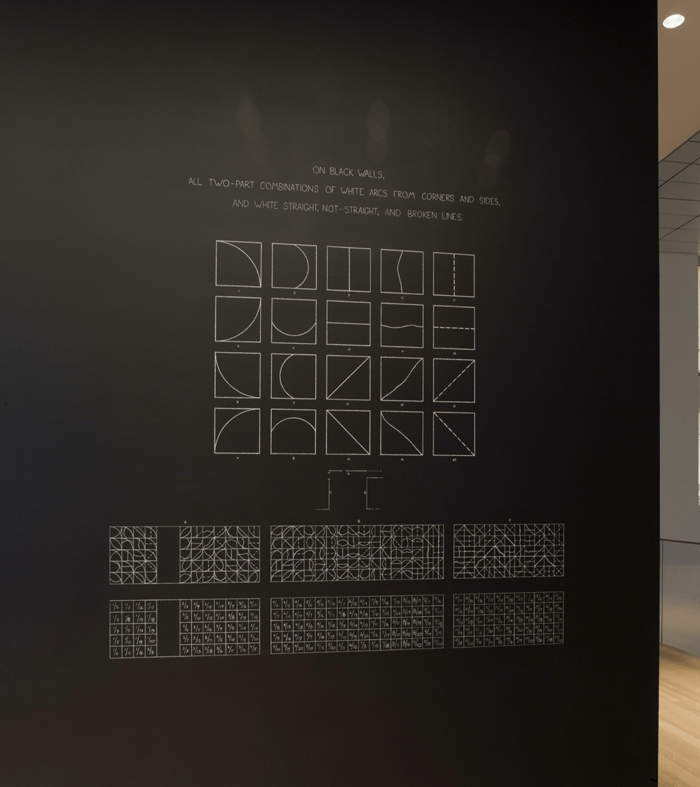

Relevant supporting developmental materials of Glitch Room ― my MA Graphic Media Design major project at London College of Communication, University of the Arts London (UAL) in 2019.
Why is it presented as a webpage?
1 To be cohesive with other parts of the project.
2 To enable live demonstration of past experiments inside this document, as some are only executable within a browser.
Why is it mainly constructed by questions and answers?
1 For myself to be reflective by answering the questions.
2 To make it more engaging for the reader by raising curiosity with questions.
3 To make the contents easy to navigate through.
Pattern as subject
Why was pattern chosen as my research subject?
To fulfil my wish of exploring more visual-oriented areas rather than social-related topics.
What experiments did I do?
1 The Letter Evolution: an experiment which aims at exploring the usage and effect of pattern making techniques on typographic design.
⇧ Example spreads of ‘The Letter Evolution’ by Nora Zhao (2019).
2 Emotional Words: an experiment which explores the meaning and typographic pattern by highlighting and isolating enclosed space in written words.
⇧ Cover and an example spread of ‘Emotional Words’ by Nora Zhao (2019).
3 Google Translate: an experiment which aims to visualise the influence of machine translation by showing a piece of sample text.
⇧ Cover and example spreads of ‘Google Translate’ by Nora Zhao (2019).
How do I evaluate these experiments?
1 Strength: explorations of pattern from different aspects.
2 Weakness: limited depth of investigation on pattern, and lack of iterations due to frequent change of directions.
How to improve it?
To zoom down area of intended investigation and find a focus.
Unique pattern as focus
What was chosen as the focus?
Mass-produced unique pattern.
What secondary research informed this decision?
Creative Review Annual 2019: each copy comes with a unique cover design created by Alex Trochut (more info).
⇧ Selected covers of 'Creative Review Annual 2019' by Alex Trochut (2019).
The appeal of this project is that it doesn’t aim at making one specific design. Instead, by making use of a generative tool, the designer was able to create unique design pieces. The results, as well as the approach, is stimulating.
What was used as the generator of these variations?
HP Mosaic: a software which takes vector-based seed files as input and generates a set number of different output by random scaling, trans-positioning and rotating.
⇧ Illustrated mechanism of 'HP Mosaic' by HP (2018).
What are the limitations of this software?
1 The options offered are limited.
2 The results, directly extracted from the already made designs, are more or less expected.
Tool and method
What tool may be adopted for my project?
Coding: through writing code manually, I may build an executable program in which underlying computing tasks are constructed from my specific design needs.
Why?
1 To break the restrictions set by ready-made design software.
2 To work directly with the medium which constructs digital design output.
3 Most importantly, to learn to code through practice and develop it as a skill to improve my competitiveness in the future.
What experiment did I do?
Mouse XY: an experiment in which the construction of pattern is made viable through mouse movement. Hover over your mouse to draw. Double click to reset current canvas. Right click to save current image.
P5.js JavsScript library is used to create the canvases (more info).
⇧ Example canvases of 'Mouse XY' by Nora Zhao (2019).
⇧ Example image output of 'Mouse XY' by Nora Zhao (2019).
How do I evaluate this experiment?
1 Strength: it’s responsive and playful.
2 Weakness: it’s highly reliant on manual input. Therefore, output quality may vary depending on the skill of the ‘painter’ and effort put in ‘painting’ the picture.
How to improve it?
To build a program which functions automatically (generative).
What demonstrated its viability?
Distinction Machine: a project by Kim Albrecht which explores computational behaviour under ambiguous situations. Geometries of different colours are positioned at the same location to produce pattern (more info).
⇧ Models of 'Distinction Machine' by Kim Albrecht (2019).
What technique was used to generate the dynamic output?
Z-fighting: a phenomenon in 3D rendering which occurs when two or more layers are positioned in identical or proximate positions. The colours ‘fight’ with each other to be shown on screen pixels and result in a flickering rasterisation effect.
Construction and investigation
What experiment did I do?
Fighting Pattern: an experiment which generates pattern from a scene of z-fighting, in which the most straightforward geometric surface, flat plane, is used.
Three.js is used to create the scenes. It is a JavaScript library for creating and displaying animated 3D computer graphics in web browsers (more info).
Front facing (1)
Front facing (2)
Tilted angle (1)
Tilted angle (2)
⇧ Example output of 'Fighting Pattern' by Nora Zhao (2019).
⇧ Framework diagram of 'Fighting Pattern' by Nora Zhao (2019).
What did I notice?
Generated images may vary while the planes are tilted to different angles.
What to be done next?
An investigation of z-fighting behaviour with the method of controlled experiments in which everything is held constant except for one variable.
What are the findings?
Changes of camera position and plane rotation angle on x and y axes may result in different appearances of generated images.
Camera position on z axis: 1
Camera position on z axis: 0.8
Camera position on z axis: 0.2
⇧ Example test results of camera positions on z axis by Nora Zhao (2019).
Plane rotation: on both x and y axes
Plane rotation: on x axis only
Plane rotation: on y axis only
⇧ Example test results of plane rotation combinations on x and y axes by Nora Zhao (2019).
Plane rotation on x axis: 0.09
Plane rotation on x axis: 0.54
Plane rotation on x axis: 0.74
⇧ Example test results of plane rotations on x axis by Nora Zhao (2019). Similar situations occur with rotation on y axis.
Interaction integration
How to make the findings accessible?
To add control sliders for these variables to allow results of different looks to be generated.
What other features can be added?
1 Colour adjustments option: to allow setting up colours of personal preferences;
2 Random appearances: to create varied results upon each visit (or refreshment of the page) by combining randomly generated colour, plane rotation and camera position values;
3 Screenshot function: to offer a way of preserving generated results.
What is the result of this experiment?
Configurable Pattern: a canvas in which an interactive control panel is implemented for customisable generation of z-fighting pattern. Use the control panel or press refresh button to generate new looks.
⇧ 'Configurable Pattern' by Nora Zhao (2019).
⇧ Side by side display of 'Configurable Pattern' by Nora Zhao (2019).
Is there another variation of this experiment?
Yes. To add a focal point in the canvas, I also created a version with a circle in the middle. The colour, size, and location of the circle can be adjusted through the control panel, or be completely dismissed from the canvas by setting its scale to 0.
Additionally, from generated images, postcards were printed to materialise the artefacts.
⇧ Live demonstration and printed postcards of 'Drop the Dot' by Nora Zhao (2019).
Sensor integration
What can be explored further?
More organic ways of interaction.
What secondary research facilitated this thought?
At ‘The Shift’ exhibition, one of Rafaël Rozendaal’s websites (source) was transformed into an installation: when the visitor moves in the room, the sound of a mosquito will be played. Otherwise, the place stays silent (more info).
⇧ ‘The Shift’ solo show at W139 Amsterdam by Rafaël Rozendaal (2011).
This straightforward but playful example demonstrates that the interaction between the user and artwork can be responsive and organic.
Currently, my project only allows users to adjust the variables manually. However, ways of interaction can be further explored. In spite that a digital device is used to generated and presented the artwork, there can still be ways of bringing in external factors.
How?
To reconsider the system’s input methods and parameters.
To be specific, environment-related factors, such as sound, light and movement can be turned into data by sensors and be utilised as automatic and continuous input of the image generating system.
How to collect data?
From 'Plant-to-Plant Protocol' (a Supra Systems Studio workshop), I studied the basics of data transmission within the scope of physical computing in practice. This experience has informed me of the viability of using physical computing to collect and transport data from sensors to my image generation system.
⇧ Poster, the workshop and field device installation of 'Plant-to-Plant Protocol' (2019).
With further research and technical support from the creative technology lab in LCC, I managed to connect the sound and light sensor to my model for data input.
How to use the data as input of my experiment?
Since data collected by the sensors are mathematical values, it becomes a matter of using the numbers to influence components of the model:
1 Light: to change the brightness of colours because of their strong visual associations.
2 Sound: to control the scale of the model, so that the model has an approximate effect of sound visualisation and becomes a bridge which links hearing and sight senses.
Why is sphere used in this experiment?
1 To add a sense of depth in space.
2 for extended flexibility: to have rotation along all x, y and z axes.
3 To create distinctive pattern compared to the previous experiment (due to sphere’s unique structure).
What else can be added in the system?
Gradual colour change: to enhance the dynamics of the generated visual results in such a way even when the data input doesn't trigger noticeable variations of the model, new colour combinations are still being formulated every moment.
What is the result of this experiment?
Reactive Sphere: an automatically functioning responsive sphere model which produces bespoke pattern according to the combination of inner and outer factors.
⇧ Components sensors and installation view of 'Reactive Sphere' in 'GMD Work in Progress' show by Nora Zhao (2019).
xxxxxxxxxxxxxxxxxxxxxxxxxxxxxx sol lewitt

⇧ Installation view of 'Focus: Sol LeWitt' exhibition: 'Wall Drawing #260 (1975)'. Photograph by Thomas Griesel (2008-2009).
Database integration
Is there any other data suitable for my project?
Zooming out of the environment near us and thinking bigger, there are also 'activities' of the mother nature that can be used as numeric input.
What secondary research facilitated this idea?
To reflect global diversity, D&AD's 2013 Annual cover, designed by Fleur Isbell, displayed 196 code generated illustrations from meta and location data for each country in the world (more info).
⇧ 'D&AD Annual 2013 – Global Horizons' by Fleur Isbell (2013).
This project demonstrated a viable way of using location-related data for automated visual generation. Similarly, weather data can be also be utilised in my project as it is not only dynamic but also relevant to our daily life.
Where can I obtain the data?
Online database: for my project, the weather data is fetched from 'OpenWeather' (more info).
What is the result of this experiment?
City Sphere: a system which takes live weather data of designated city and generates corresponding model upon request.
⇧ 'City Sphere' by Nora Zhao (2019).
⇧ Output stills of 'City Sphere' at 18:35, 07 November 2019. Image by Nora Zhao (2019).
What can be further explored?
If data from different cities are applied to the system, a series of results can be generated and presented simultaneously. The form of this experiment may be altered for installation.
What secondary research encouraged this idea?
Prismatica: an installation created by RAW Design to engage visitors and invoke a feeling or mood from day to night. It consists of 50 prisms that glimmer under natural light by day and provide atmospheric lighting by night (more info).
⇧ 'Prismatica' by RAW Design (2015).
This project differs from mine because the natural lighting, rather than live data, causes changes here. However, its quantitative approach and tangibility of physical objects are worth considering.
Specifically, it can be a number of spheres hanging in an exhibition room and have the generated moving image shown on their surfaces with the method of projection mapping. In this way, a physical space is created where various dynamic 3-dimensional artefacts can be viewed simultaneously.
Review and preview
What have I explored so far?
From the last three experiments, I explored input parameters respectively from the following aspects:
1 Configurable Pattern: manual data input from the users according to their preferences.
2 Reactive Sphere: automatic data input from sensors which collect information its surrounding environment.
3 City Sphere: data input from a live database. The information sits within a broader scope and is collected from corresponding professional agencies. After setting the target object (a city), data will be automatically fetched and updated to the system.
What is the commonality of these experiments?
The concept of co-creation is integrated by having the system set up with three factors which influence the outcome.
Following is the illustrated framework of ‘Reactive Sphere’ which demonstrates its mechanism.
⇧ Illustrated framework of ‘Reactive Sphere' by Nora Zhao (2019).
What are the differences in these experiments?
Customisable options are available in the first and last experiment, whereas the second experiment produces personalised results.
1 Configurable Pattern: customisation through the control panel.
2 Reactive Sphere: personalised result by generating a model that can be influenced by its viewers’ activities.
3 City Sphere: customisation by allowing users to connect the model with chosen cities.
Design choices
Why do I choose black as background colour of the webpages?
1 To visually exhibit the difference of screen as medium as opposed to paper as medium. Black is rarely used as background colour in print because it usually requires special ink. But in digital artefacts, the use of black is rather quite common without added cost.
2 Black as the darkest colour guarantees colourful models to stand out and be the centre of the viewers’ focus.
Why are vivid colours chosen to be used?
Glitch art is always strongly associated with vivid colours visually. Take the example below where glitch artist Antonio Roberts transformed the binary data of audio files into images with intense and bright colours (more info).
⇧ ‘Some of My Favourite Songs’ by Antonio Roberts (2012).
I want my project to evoke the sense of glitch not only form the flickering effects, but also the colours it exhibits. As the medium of exhibiting digital artwork, screen uses RGB colour model in which red, green and blue light are added together in various ways to reproduce a broad array of colours.
⇧ Left: demonstration of the principle of additive colour mixing
(source). ⇧ Right: RGB sub-pixels in an LCD TV. An orange and a blue colour on the right, and a close-up shot on the left (source).
Purposefully, I assigned red, green and blue as the initial colours of the models. Afterwards, when other colours are created and applied to the model, it reflects the additive colour model in a sense that all other colours are created from a mixture of the primary colours of red, green and blue.
Additionally, magenta is used in text and other elements to ensure readability when they overlap with the models.
Why are the models self-rotating?
‘Repositions (Double Blue)’ is an investigation into the performative nature of software by Jan Robert Leegte (source). Contrary to freezing or capturing time, digital media are closest related to the performance arts, where the act lives in the now. Using random live algorithms, the documents are tirelessly striking new poses, together entangled in an indefinite choreography of repositions.
⇧ Screenshots of ‘Repositions (Double Blue)’ by Jan Robert Leegte (2018).
Rather than making a model staying still on the screen, which is similar to how an artwork is being exhibited in the museum, I adopted the the same approach as shown in Leegte’s work by making them rotate on its own.
Outcome development
Why isn’t the project completely finished as of now?
Due to time limit and technical difficulties, many planned functions aren’t implemented in project practical resolution yet.
Even though the current website works as it is, adding these functions may significantly improve its appeal and interactivity.
Future application
Home environment projection
‘Universe of Water Particles, Transcending Boundaries’ is an interactive digital installation in which the flow of water transforms due to the interaction of people (more info).
⇧ ‘Universe of Water Particles, Transcending Boundaries’ by teamLab (2017).
What interests me is that it uses projection to alter the surroundings. Applying the same method, personalised and customised pattern can also be projected to walls at home, creating a unique and dynamic environment.
For instance, it may reflect the user’s moods by wirelessly connecting the image generation system with a smart device such as an Apple Watch for biological data collection in real-time. Ultimately, it establishes another form of self-expression.
Live corporate identity
For the city of Melbourne’s rebranding project by Landor in 2010, the diversity of Melbourne is celebrated in its visual identity through colour, forms, facets, and structures.
The logo sets introduced me the concept of dynamic identity, which is quite fascinating compared to the conventional one logo approach. However, while providing great variety in logos, I think that there may be a qualitative approach that reinforces the link between underlying meaning and its visual representation rather than a solely quantitive approach (more info).
⇧ Left: different versions of City of Melbourne's new logo by Landor (2009). ⇧ Right: logo for the Nordkyn tourism website by Neue Design Studio (2010).
On the Nordkyn tourism website, its logo updates every five minutes based on weather data from the Norwegian Meteorological Institute. The Arctic climate and dramatic weather conditions become part of the visual identity itself (Source).


{kind=link}
{kind=link}